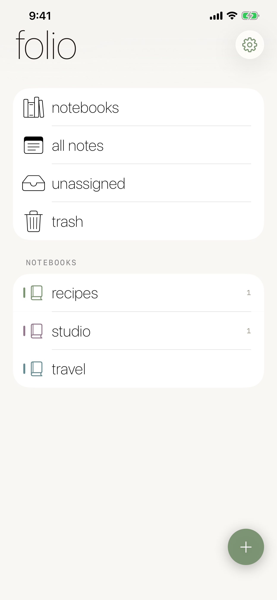
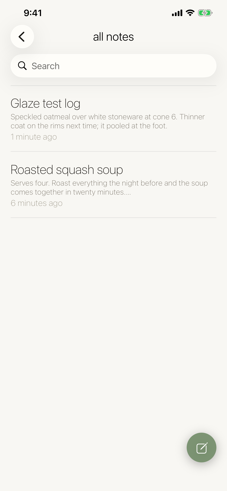
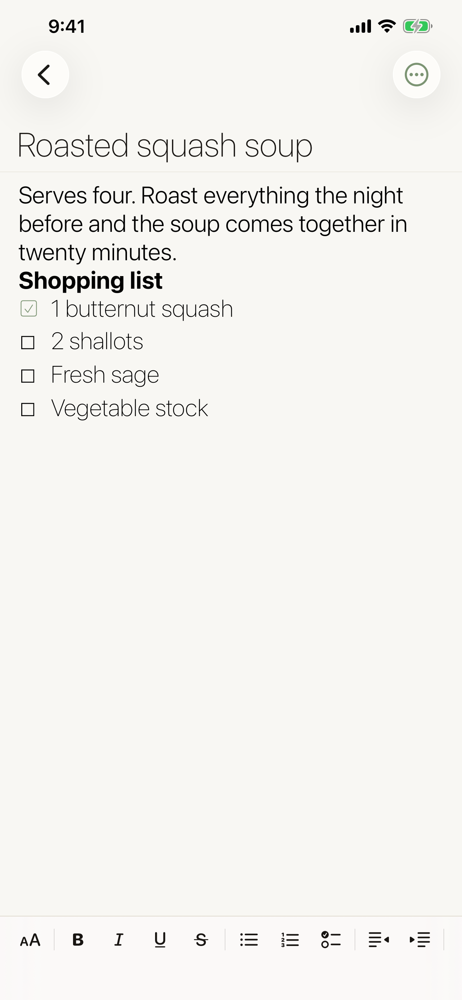
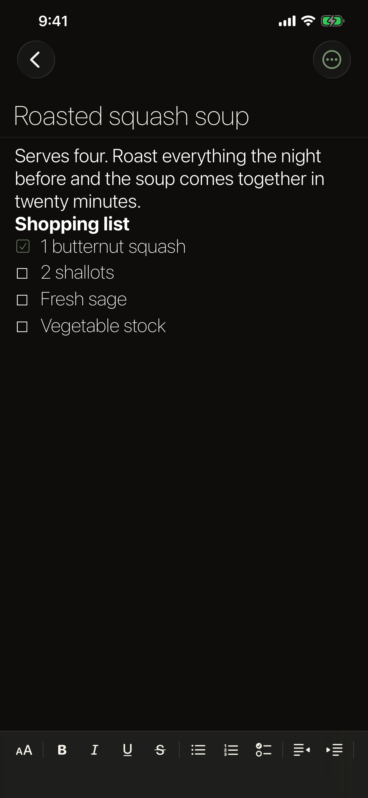
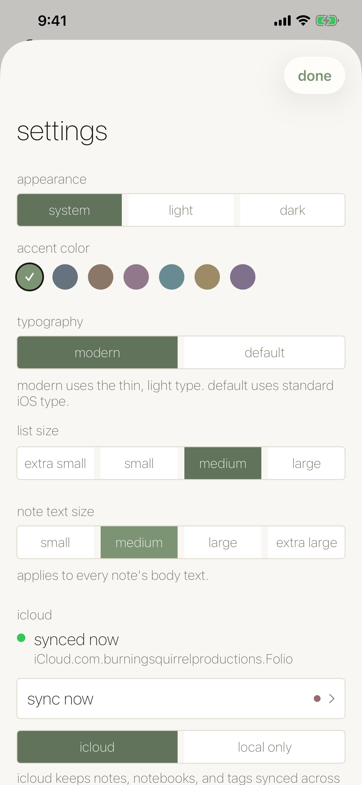
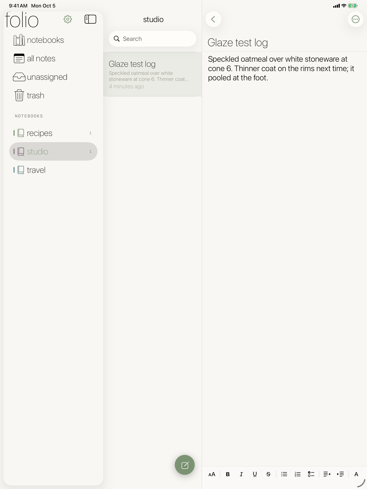
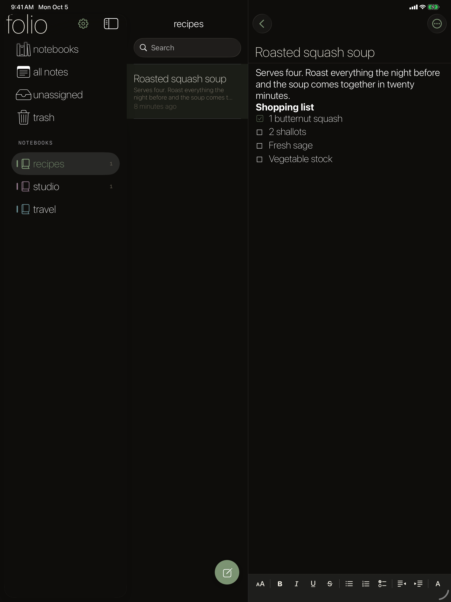

Folio
Notebooks, tags, and notes that write like they mean it.
Notebooks, tags, and notes that write like they mean it.
Folio is a notes app for writing that's longer than a sticky note. Organize notes into color-coded notebooks, cross-file them with tags, and write in a real rich-text editor with headings, lists, checklists, and images. On iPad it opens into a three-column layout: notebooks, notes, and the page you're writing.
iPhone





iPad


Give each notebook a color, then tag notes across notebooks so nothing lives in only one place.
Bold, italic, underline, strikethrough, bullet and numbered lists, checklists, indents, and inline images.
Sidebar, note list, and editor side by side, with the same notes synced from your iPhone.
Sync through your own iCloud, a trash that holds deleted notes, and export when you want out.
Keep Exploring
Back to the productivity apps